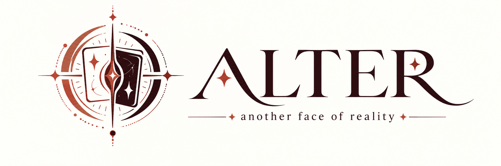

KALI MAGIC · CAMERA EFFECT
ALTER.
another face of reality
카드를 카메라에 보여 주면 화면 속 모습이 바뀝니다.
밝고 단순한 배경에서 카드를 세로로 들면 가장 안정적입니다.
another face of reality
카드를 카메라에 보여 주면 화면 속 모습이 바뀝니다.
밝고 단순한 배경에서 카드를 세로로 들면 가장 안정적입니다.

공연 전에 관객에게 보일 카드 B를 정하세요. 실제 카드 A는 어떤 카드라도 가능합니다.
카드가 화면 가장자리로 움직인 뒤 완전히 보이지 않는 상태가 유지되면 자동 공개를 준비합니다. 조명·가림으로 검출이 끊겼을 때는 수동 공개를 사용하세요.
공연 화면에서 두 손가락을 아래로 스와이프하면 설정이 열립니다.